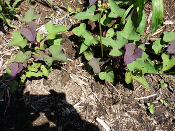

bakul 
/bakul/
Var. bakkul
v_rt.
“plant_stalk”
v.
for someone (egbakul, migbakul/imbakul, agent, eg><ø-) to plant a vegetable (egbakulan, imbakulan/migbakulan/pigbakulan, location, eg><an-) usually sweet potato (kasilè), but also tinangkung (igbakul, inbakul, ig><ø-) by first making a hole with a stick and then planting a stalk which will eventually root (egderalid) and then grow
Wrd.Gloss: plant_stalk
Ka egbakul iyan ka pegpamula te lawa te kasilè. Seini ne lalag egkahamit dè diyè te kasilè su seini ne lalag para rè te pinamula ne egdul-ug ne iyan igpamula se lawa iling te kasilè, alugbati, wey tangkung.
Egpamakul e pad te kasilè diyè te talihebe ku.
I'm going to plant sweet potato stalk in my narrow field.
Eng. plant sweet potato; sweet potato, plant
Online dict status: -
Usage level: M
adj.
(binakul, -i) planted stalk of potato
Eng. planted stalk
Online dict status: -
Usage level: R
Updated by: RJH,AAA,RJH,QDL,QDL
Last updated: 01/Dec/2009
This page last updated: 19/May/2012
Copyright © 2009-2010, Matigsalug Language Christian Association, Inc